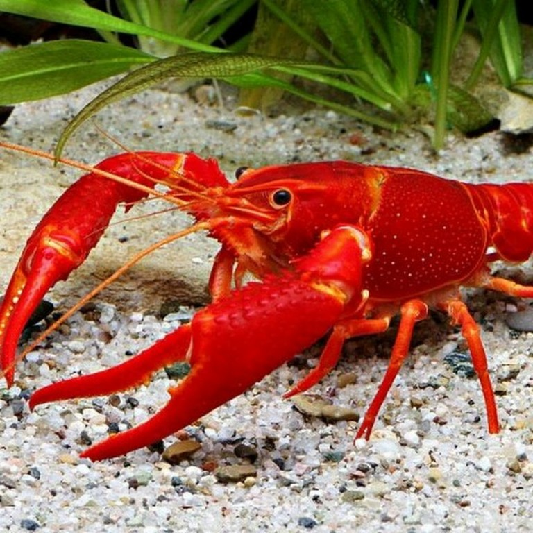
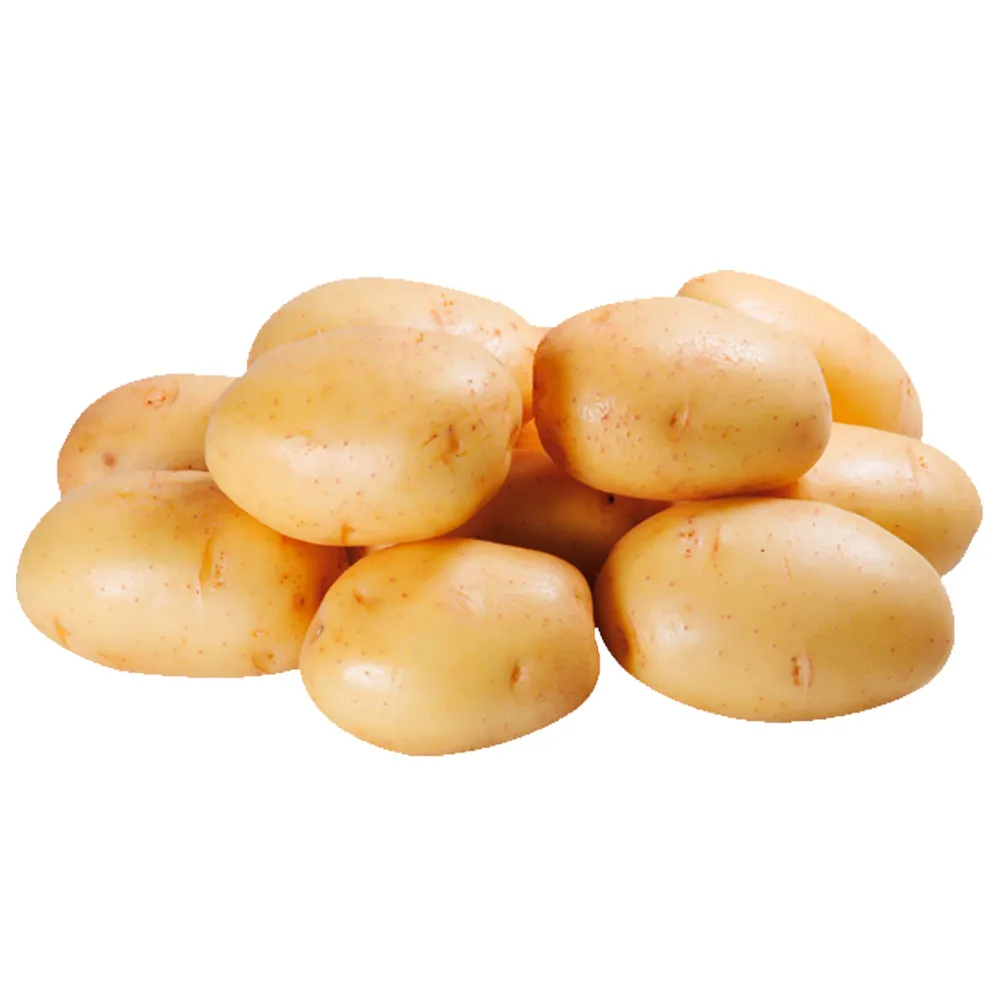
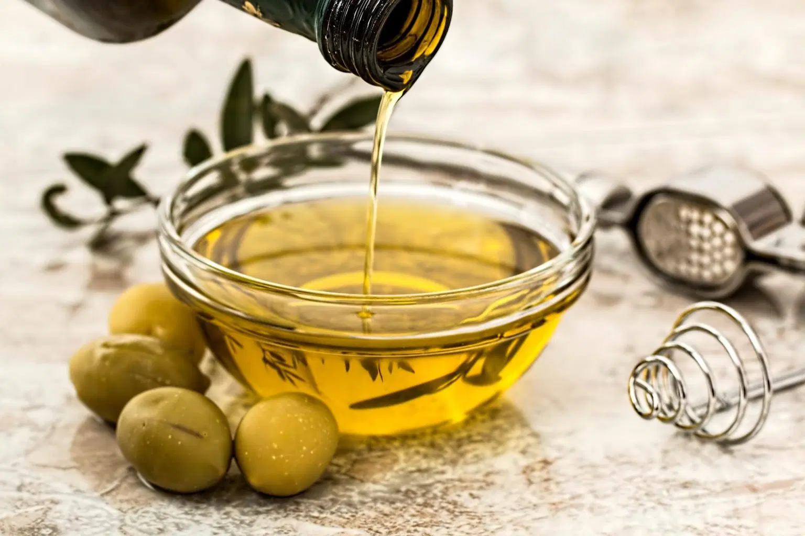
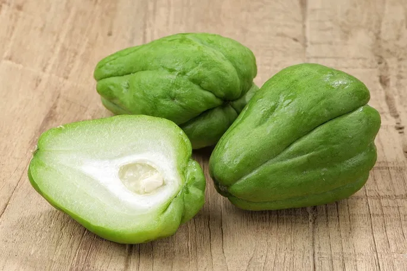
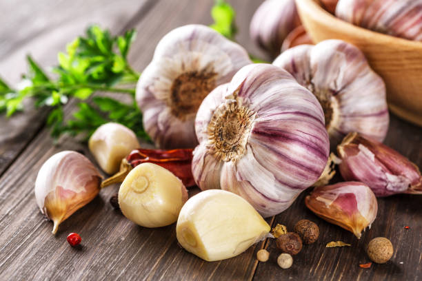
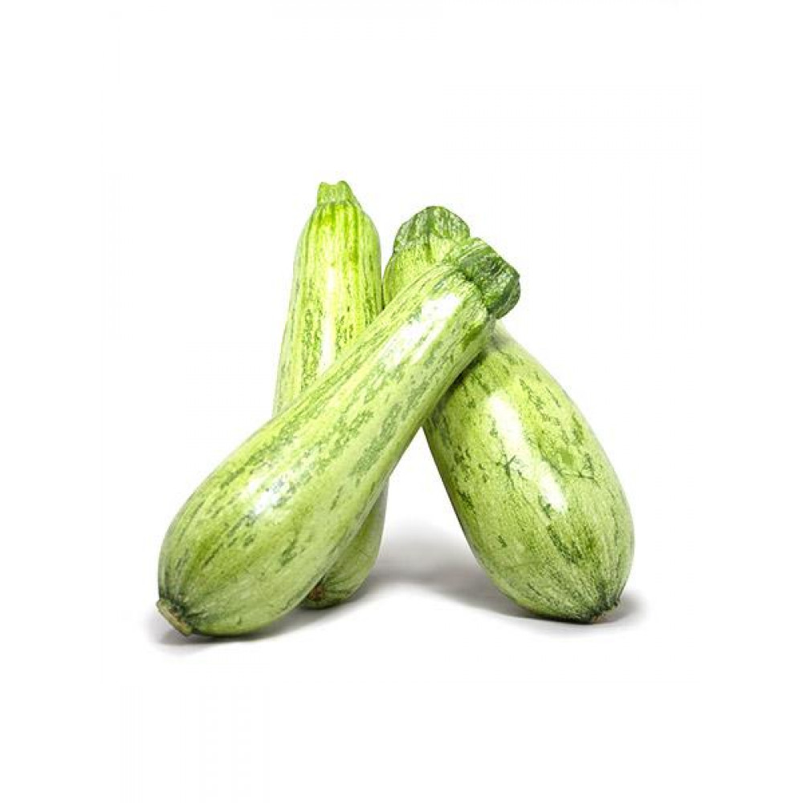
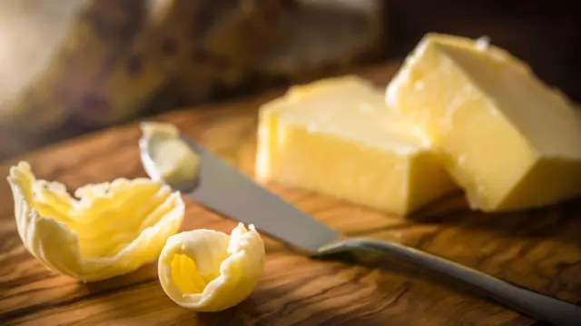
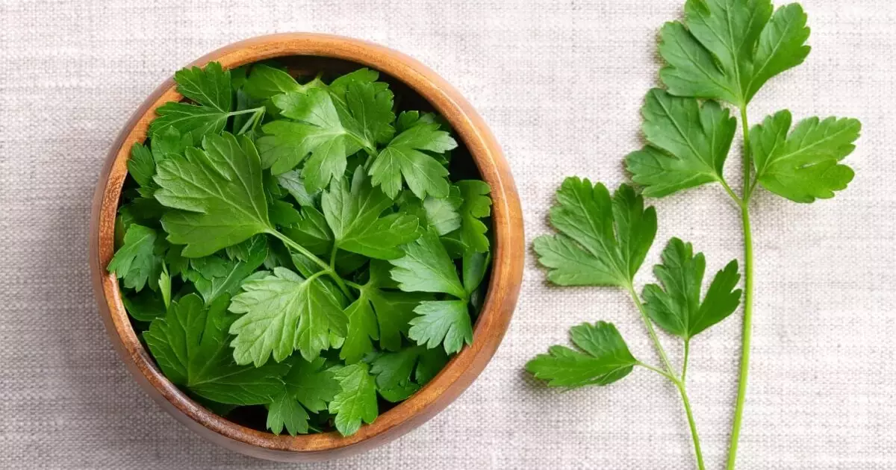

-
01 Lagosta
 Batata Inglêsa
Azeite de Oliva
Chuchu
Alho
Abobrinha
Manteiga
Cenoura

Salsinha
Sal
Cozinhar a lagosta: Em uma panela grande, adicione água com uma pitada de sal. Coloque a lagosta na água fervente e cozinhe por cerca de 10 a 15 minutos, dependendo do tamanho da lagosta. Ela estará pronta quando a casca ficar vermelha brilhante.
Retire a lagosta da água: Após o tempo de cozimento, retire a lagosta e deixe esfriar um pouco antes de retirar a carne da casca. Reserve a carne da lagosta.
Chuchu, cenoura, batata e abobrinha: Lave e descasque as batatas e a cenoura. Corte todos os legumes (chuchu, cenoura, batata e abobrinha) em cubos pequenos para que cozinhem de maneira uniforme.
Cozinhe os legumes: Em uma panela com água e uma pitada de sal, cozinhe as batatas, cenouras, chuchu e abobrinha até ficarem macios, mas ainda firmes. Isso deve levar cerca de 10 a 15 minutos, dependendo do tamanho dos pedaços. Retire e reserve.
Refogar o alho: Em uma frigideira grande, adicione o azeite de oliva e a manteiga. Quando a manteiga derreter, adicione os dentes de alho picados e refogue até ficarem dourados e aromáticos (cerca de 1 a 2 minutos).
Adicionar os legumes e a carne da lagosta: Acrescente os legumes cozidos e a carne da lagosta cortada em pedaços pequenos na frigideira. Refogue por mais alguns minutos, mexendo bem para que os sabores se misturem.
Temperar: Adicione sal a gosto e misture bem. Quando os legumes estiverem bem temperados e a lagosta aquecida, retire do fogo.
Decoração e salsinha: Coloque o prato em uma travessa e finalize com salsinha picada por cima para dar frescor e um toque de cor.
Acompanhamento: Se preferir, pode servir com arroz branco ou até mesmo com uma salada fresca para complementar.
Prontinho! Um prato delicioso de lagosta de cabo vermelho com legumes ao alho e manteiga, fácil e saboroso. Bon appétit!